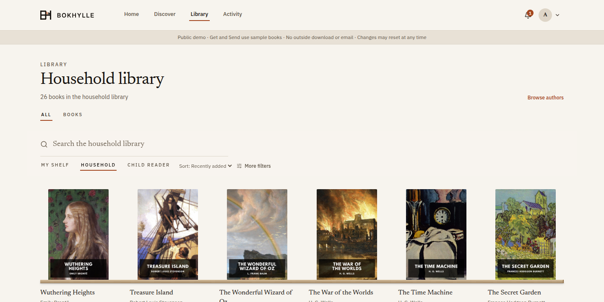
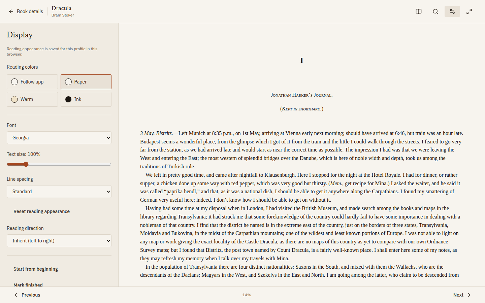
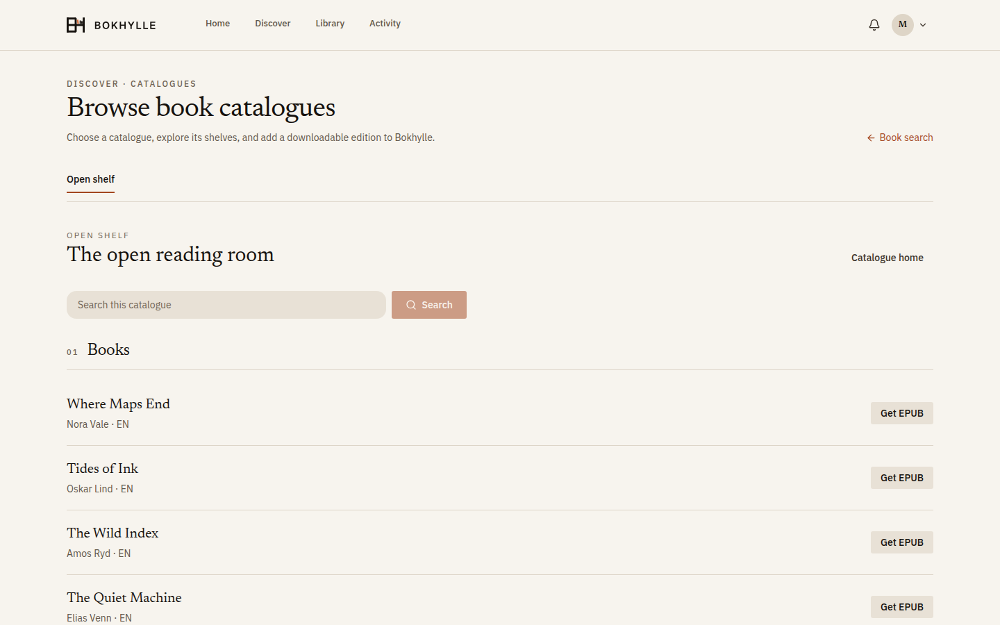
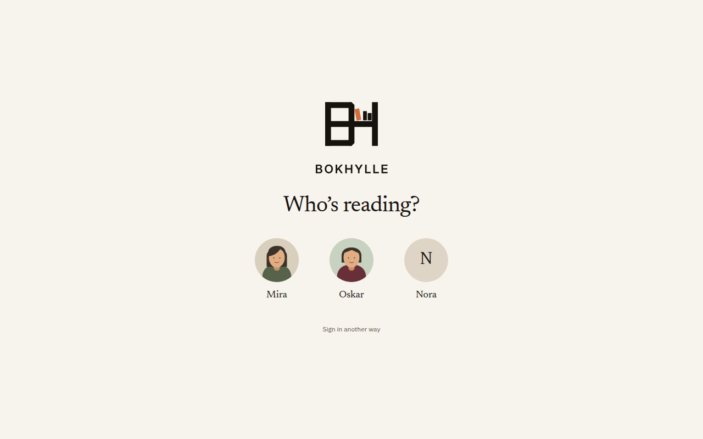
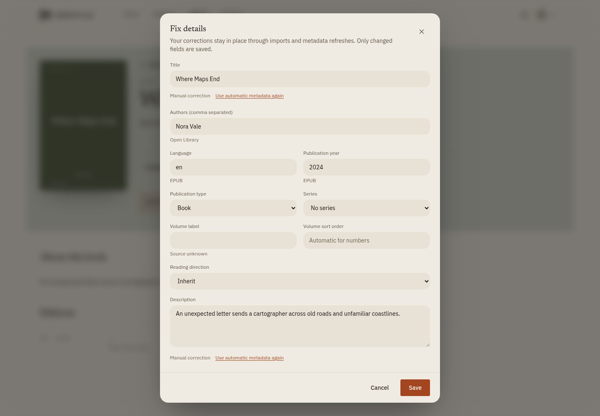

Find the next book
Search titles and authors, browse configured OPDS catalogues, and find Home suggestions shaped by your own shelf, likes, and interests.
A SELF-HOSTED BOOKSHELF № 01
Discover a good book. Keep it in your household library. Read EPUB, PDF, and CBZ here, or send a file to your reader.
Public beta. One click to enter. Sample classic books. No account required.
Find books across your collection, make personal shelves, and follow the authors you care about. The shared library stays useful for everyone at home.

Open an EPUB in your browser, adjust the text, search the book, and pick up where you left off on another device.

Browse an OPDS catalogue and bring a downloadable edition into your library. This preview uses fictional books; your household chooses its own sources.

Choose your picture or name, enter your PIN or password, and return to your own shelf. These profiles and portraits are fictional.

See where a book's details came from. Your corrections survive imports and refreshes, with a choice to return each field to automatic metadata.

Search titles and authors, browse configured OPDS catalogues, and find Home suggestions shaped by your own shelf, likes, and interests.
Bring EPUB, PDF, and CBZ books into a shared library from files or direct links while each reader keeps a personal shelf.
Read EPUB, PDF, or CBZ in Bokhylle, download a file, send a book to your Kindle, or connect a compatible reader with OPDS and KOReader sync.
Explore 26 sample classics through separate adult and child views. Try Get and Send with prepared samples; nothing is downloaded from outside or emailed. Changes are temporary.
Open the demo